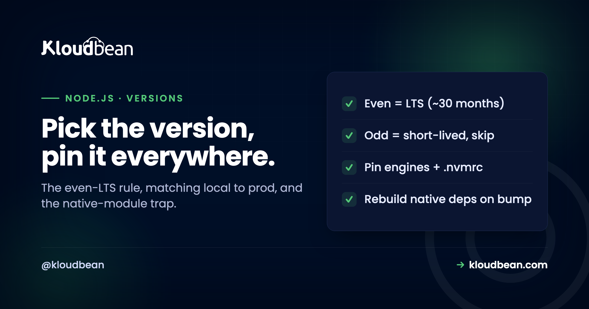
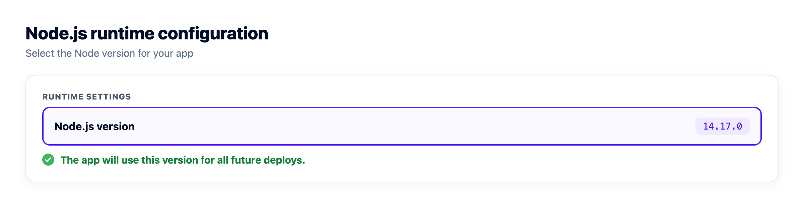

Node.js Version Management: Which Version to Run, and Why It Breaks Deploys

The Node.js version you run feels like a background detail until the day it is the whole problem. An app that runs perfectly on your laptop throws errors in production, a dependency refuses to install, a build that worked last month fails after a server rebuild. A surprising share of these come down to one thing: the Node version differs somewhere, or you are on a version you should not be running at all. Picking and pinning your Node version is a five-minute habit that prevents a category of confusing failures, and it is worth understanding the few rules that make the choice obvious.
Run an even-numbered Active LTS version. Node releases a new major roughly every six months, and only the even-numbered majors become LTS (Long Term Support), with about 30 months of maintenance; odd-numbered majors are short-lived, around eight months, and are not meant for production. So use the current Active LTS in production, and skip odd versions there. Pin it so your machine and your server match: set the engines field in package.json and an .nvmrc file, and use nvm locally. Watch for the native-module trap, packages with compiled bindings can break when the Node major version changes and need a reinstall or rebuild. On Kloudbean you set the Node version for your app in the console, so local and production can be kept aligned deliberately.
Why the Node version matters more than it looks
Three separate things ride on the version number, which is why getting it wrong shows up in such different ways.
First, language features: newer Node versions support newer JavaScript syntax and APIs, so code that uses a recent feature will simply fail on an older runtime, and occasionally something removed will fail on a newer one. Second, security support: each version line only receives fixes for a defined window, and once it reaches end of life it stops getting security patches entirely, so running an unsupported Node version means known vulnerabilities that will never be fixed for you. Third, and most sneakily, native modules: packages with compiled C++ bindings are built against a specific Node version's binary interface, and moving between major versions can break them until they are rebuilt. Any one of these can be the reason your app behaves differently in two places. The version is not a detail; it is three important guarantees bundled into one number.
The LTS rule, worth learning once
Node's release scheme looks arbitrary until you know the pattern, and then choosing a version becomes trivial.
Node releases a new major version on a regular cadence, historically every six months in April and October, and the even-versus-odd distinction is the key. Even-numbered majors (such as 18, 20, 22) are promoted to LTS and maintained for roughly 30 months total, moving from Current to Active LTS to Maintenance before end of life. Odd-numbered majors are short-lived, supported for around eight months and never promoted to LTS, so they exist mainly for testing upcoming features, not for production. The rule that falls out of this is simple: run an even-numbered Active LTS version in production, and do not run odd versions there. It is also worth knowing the cadence is evolving, with Node moving toward annual major releases in the future, so rather than memorising specific end-of-life dates, learn the signature: an even number is a safe production bet, an odd number is not, and any version past its support window should be upgraded off promptly. The recognisable sign that you have drifted onto an unsupported version is security advisories you cannot patch and, eventually, tools and dependencies dropping support for it.
Pin the version so local and production match
Choosing the right version is half the job; making sure every environment actually uses it is the other half, and where "works on my machine" is born.
If your laptop runs one Node major and your server runs another, you are testing against a different runtime than you ship to, which is exactly how a bug hides until production. Pin the version explicitly in a few places. The engines field in package.json declares which Node version your app expects, so tooling can warn or refuse when it is wrong. An .nvmrc file records the version for anyone using nvm locally, so a quick nvm use switches everyone to the same version. And your production environment should be set to that same major version deliberately, not left to whatever default happens to be installed. The goal is that "which Node are we on?" has one answer across every machine, because the moment the answer differs by environment, you have reintroduced the class of bug pinning was meant to prevent. Treat the Node version as part of your app's configuration, not an accident of the host.
That last part depends on your host actually letting you say so. Plenty don't: you get whatever Node the base image shipped with, and matching it means matching your laptop to the host rather than the other way round. Check before you commit to a platform. On Kloudbean the Node version is a runtime setting on the app in the console, no SSH and no image rebuild, so the pin in your .nvmrc and the version in production are the same deliberate decision rather than a coincidence you're maintaining.

The native-module trap that breaks builds
This is the one that produces the most baffling errors, so it earns its own section.
Some npm packages include native code, C++ addons compiled against Node's binary interface, its ABI, which changes between major versions. When it works you never think about it. When you change the Node major version and do not rebuild, you get errors that look nothing like a version problem: a module that "was compiled against a different Node.js version," a failed node-gyp build, or an import that simply cannot find the binary. The fix is to reinstall or rebuild native dependencies after a Node version change, often by deleting node_modules and reinstalling so the native pieces compile against the new version, which is one of the causes explored in fixing cannot find module errors. The lesson to internalise: changing the Node major version is not a free swap, it can invalidate compiled dependencies, so a version bump and a clean reinstall belong together. This is also why matching versions across environments matters so much, since a native module built on your laptop's Node will not necessarily load on a server running a different major.
Where this gets diagnosed quickly or slowly is the build log. A node-gyp failure is loud and specific if you can read the output, and completely mysterious if all you get is "deploy failed." So it's worth deploying from Git with the build running server-side and the log streaming live, which is how Kloudbean's managed CI/CD works: you watch the compile fail on the line that failed, rather than inferring it from a broken app. Nothing about that is Kloudbean-specific engineering, it's just the difference between five minutes and an evening.
Upgrading Node without drama
Versions age out, so upgrading is not optional, but it is very manageable if you do it deliberately rather than in a panic when support ends.
When your LTS line approaches end of life, move to the next even LTS on purpose: install it in a testing environment, run your test suite and your app against it, and watch for deprecation warnings, which Node prints before it removes things, giving you notice. Reinstall dependencies cleanly so native modules rebuild, check that your key libraries support the new version, and only then promote it to production, ideally with a way to roll back if something surfaces. The mistake to avoid is drifting: staying on an end-of-life version because upgrading feels risky, which just accumulates unpatched vulnerabilities and a larger, scarier jump later. Small, regular upgrades to the current LTS are far less painful than a rushed migration off a version that stopped getting security fixes months ago. Put the next upgrade on the calendar rather than waiting for something to force it. Two things make the actual cutover cheap enough to do on a Tuesday: changing the version should be a setting rather than a rebuild, and you should be able to redeploy the previous release if the new runtime surfaces something. Deployment history plus a version selector covers both, which is how it works on Kloudbean and is worth checking for wherever you run.
What ignoring the version number actually costs
The reason to care about any of this isn't tidiness. It's that the bill for drifting arrives in four separate places, and none of them arrives labelled as a version problem.
A debugging session you shouldn't be having. "Works on my machine" is the most expensive sentence in software. When local is on 20 and production is on 18, the difference shows up as a syntax error, a missing API, or a native module that refuses to load, and you'll usually go looking in your own code first. Reckon on hours, in the middle of something else.
Security advisories you can't act on. An end-of-life Node line keeps running perfectly, which is exactly the trap. It just stops receiving fixes. So a published vulnerability in that line is permanent for you, and the only remediation is the upgrade you'd been putting off, now under time pressure and with an audit or a customer questionnaire waiting on it.
A dependency ceiling you didn't choose. Libraries drop old Node majors. Sooner or later a security patch for something you depend on ships only for a version you're not on, and now the small upgrade is a prerequisite for the urgent one. Two risky changes in the same week instead of one boring change six months earlier.
Builds you can't reproduce. Without a pin, "the build that worked" is a fact about whatever the server had installed that day. Rebuild after a server change and it may not work. That's a bad property for the thing that ships your product.
All four are cheap to avoid: pick an even LTS, declare it in engines and .nvmrc, set the same major in production, and reinstall dependencies when you bump. Maybe ten minutes of work, once.
And be clear on the split, because it's the part people get wrong when they assume managed means handled. A platform patches the OS and the stack under you, gives you somewhere to set the version, and streams the build log so a failure is legible. It cannot pick the right version for your dependency tree, it cannot keep your engines field honest, and it will not rebuild a native module you never reinstalled. No host fixes an app that crashes because you moved a major and skipped the clean install, ours included; it'll just restart the crash for you, reliably, forever. For where to run Node generally, see the best managed Node.js hosting guide.
Related to node.js Version Management
For running Node in production overall, the best managed Node.js hosting guide and deploying a Node app to a managed cloud. Keeping the process alive is the PM2 process manager guide. When a version mismatch shows up as a module error, fixing cannot find module helps, and when it shows up as an OpenSSL build failure, the digital envelope routines error is the fix. Configuration that should travel with the version is covered in environment variables done right.
Prototype to production, without the babysitting.
Move the whole thing onto a managed server you own: always-on processes, a managed database for real data, object storage for uploads, and Git deploys with live build logs.
- ✓ Managed databases
- ✓ Always-on processes
- ✓ Object storage
- ✓ Automatic backups
- ✓ Free SSL
- ✓ Git deploy
- ✓ Free migration
Plans from $8/mo · Free migration assistance · Free trial
FAQ
Which Node.js version should I use in production?
Use an even-numbered Active LTS version. Node promotes only even-numbered major versions to LTS, with roughly 30 months of support, while odd-numbered majors are short-lived and not intended for production. So pick the current Active LTS line for anything you ship, and reserve odd or Current versions for experimenting with upcoming features. When your LTS line nears end of life, plan a move to the next even LTS rather than staying on an unsupported version.
What is the difference between even and odd Node versions?
Even-numbered majors, like 18, 20, and 22, become LTS and are maintained for about 30 months, making them the stable choice for production. Odd-numbered majors, like 19, 21, and 23, are supported for only around eight months and are never promoted to LTS, so they exist mainly for testing new features. The simple takeaway is to run even versions in production and treat odd versions as short-lived previews, not something to build a business on.
How do I make sure my local and production Node versions match?
Pin the version in multiple places. Set the engines field in package.json to declare the expected Node version, add an .nvmrc file so anyone using nvm can switch to the same version with one command, and set your production environment to that same major version deliberately. The aim is a single answer to "which Node are we on?" across every machine, because a mismatch between your laptop and your server is a leading cause of code that works locally but fails in production.
Why does my native module break when I change Node versions?
Because native modules include compiled code built against a specific Node binary interface, which changes between major versions. When you switch Node majors without rebuilding, the compiled binary no longer matches, producing errors about a module compiled against a different Node version or a failed native build. The fix is to reinstall dependencies cleanly after a version change, often by removing node_modules and reinstalling, so the native pieces recompile against the new Node version.
What happens if I run an end-of-life Node version?
It keeps working, which is the trap, but it stops receiving security patches, so any newly discovered vulnerabilities in that version line will never be fixed for you. Over time, dependencies and build tools also start dropping support for it, making installs and upgrades harder. Running an unsupported version is a slowly growing risk rather than an immediate failure, which is why upgrading to a current LTS before end of life, rather than after, is the safer habit.
How often does Node release new versions?
Historically Node has released a new major version every six months, in April and October, with even-numbered April releases becoming LTS and odd-numbered October releases being short-lived. The cadence is evolving toward annual major releases in the future, so rather than memorising exact dates, rely on the even-equals-LTS rule and check the current support status of your version. The pattern matters more than the precise schedule, since the schedule can change.
How do I upgrade Node safely?
Do it deliberately in a testing environment first: install the next even LTS, run your test suite and app against it, and watch for deprecation warnings that Node prints before removing features. Reinstall dependencies cleanly so native modules rebuild, confirm your key libraries support the new version, then promote to production with a rollback option. Small, regular upgrades to the current LTS are far easier than a rushed jump off a version that went end of life months ago.
Can I set the Node version on Kloudbean?
Yes. Kloudbean lets you configure the Node runtime version for your app in the console, so you can align production with the version you develop and test against rather than accepting a default. Combined with Git-based deploys and PM2 support for running the process, that gives the version question a clear, controllable answer. Choosing the right version, keeping your engines field accurate, and rebuilding native modules on a bump remain your responsibility as application hygiene.